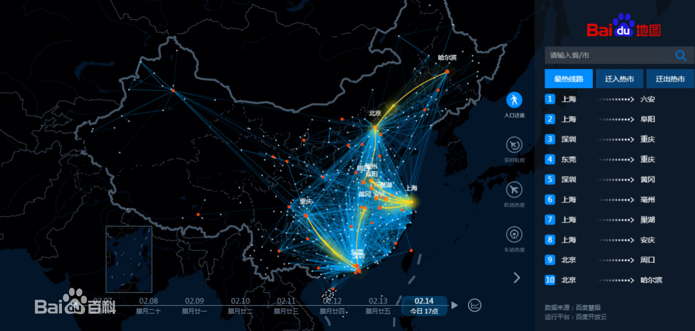

本实例原始信息：
作者：anix
演示地址：Echarts模拟迁徙
源码地址：GitHub-ananix-qianxi
“百度地图春节人口迁徙大数据”（简称“百度迁徙”）是百度在春运期间推出的技术品牌项目，为业界首个以“人群迁徙”为主题的大数据可视化项目。

<!-- 线上资源-->
<!-- <script type="text/javascript" src="http://echarts.baidu.com/gallery/vendors/echarts/echarts.min.js"></script> -->
<!-- <script type="text/javascript" src="http://echarts.baidu.com/gallery/vendors/echarts/map/js/china.js"></script> -->
<!--本地资源-->
<script src="js/echarts.js"></script>
<script src="js/jquery.js"></script>
<!-- <script src="js/china.js"></script> --><div id="container" style="height: 100%"></div> // 基于准备好的dom，初始化echarts实例
// 方式一：使用china.js地图初始化方式
// var myChart = echarts.init(document.getElementById('container'));
// 方式二：使用地定义geo地图文件初始化方法，需要提前准备好china.json地图文件
$.get('js/map/china.json', function (chinaJson) {
//注册地图
echarts.registerMap('china', chinaJson);
//初始化echarts实例
var dom = document.getElementById("container");
var myChart = echarts.init(dom);
//...option
//...data
//...set
//...
});// 在上一步option的位置
// 0 准备option对象
option = null;
// 1 准备数据
// 地区坐标信息
var geoCoordMap = {
'上海': [121.4648, 31.2891],
'东莞': [113.8953, 22.901],
'东营': [118.7073, 37.5513],
'中山': [113.4229, 22.478],
'临汾': [111.4783, 36.1615],
//...
//此处省略部分数据...
'长治': [112.8625, 36.4746],
'阳泉': [113.4778, 38.0951],
'青岛': [120.4651, 36.3373],
'韶关': [113.7964, 24.7028]
};
// 准备流向信息，value为地区的数据值
var BJData = [
[{ name: '北京' }, { name: '上海', value: 95 }],
[{ name: '北京' }, { name: '广州', value: 90 }],
[{ name: '北京' }, { name: '大连', value: 80 }],
[{ name: '北京' }, { name: '南宁', value: 70 }],
[{ name: '北京' }, { name: '南昌', value: 60 }],
[{ name: '北京' }, { name: '拉萨', value: 50 }],
[{ name: '北京' }, { name: '长春', value: 40 }],
[{ name: '北京' }, { name: '包头', value: 30 }],
[{ name: '北京' }, { name: '重庆', value: 20 }],
[{ name: '北京' }, { name: '常州', value: 10 }]
];
var SHData = [
[{ name: '上海' }, { name: '包头', value: 95 }],
//省略部分数据...
];
var GZData = [
[{ name: '广州' }, { name: '福州', value: 95 }],
//省略部分数据...
[{ name: '广州' }, { name: '海口', value: 10 }]
];
var LZData = [
[{ name: '兰州' }, { name: '福州', value: 95 }],
//省略部分数据...
];
// 流向图标，可自定义
var planePath = 'arrow'
var convertData = function (data) {
var res = [];
for (var i = 0; i < data.length; i++) {
var dataItem = data[i];
var fromCoord = geoCoordMap[dataItem[0].name];
var toCoord = geoCoordMap[dataItem[1].name];
if (fromCoord && toCoord) {
res.push({
fromName: dataItem[0].name,
toName: dataItem[1].name,
coords: [fromCoord, toCoord]
});
}
}
return res;
};
var color = ['#a6c84c', '#ffa022', '#46bee9'];
// 准备自己个性化的数据
var lanzhou = {
name: '点',
type: 'effectScatter',
coordinateSystem: 'geo',
zlevel: 3,
rippleEffect: {
brushType: 'stroke'
//波纹的绘制方式，可选 'stroke' 和 'fill'
},
showEffectOn: "render",//显示涟漪
label: {
normal: {
show: true,
position: 'left',
formatter: '{b}'
}
},
symbolSize: function (val) {
return val[2] / 180;
},
itemStyle: {
normal: {
color: "red"
}
},
//
data: [
{
name: "lanzhou",
value: [103.5901, 36.3043, 1092],
tooltip: {
//formatter: '中心资源校： <br />{b0}'
formatter: function (item, ticket, callback) {
let res = "中心资源校：" + item.name + "<br />地区教学点：";
for (let i = 0, l = LZData.length; i < l; i++) {
res += '<br/>& ' + LZData[i][1].name;
}
return res
},
}
}
//...
// 准备系列series
var series = [lanzhou];
[['北京', BJData], ['上海', SHData], ['广州', GZData], ['兰州', LZData]].forEach(function (item, i) {
series.push({
name: item[0] + ' Top10',
type: 'lines',
zlevel: 1,
effect: {
show: true,
period: 6,
trailLength: 0.7,
color: '#fff',
symbolSize: 3
},
lineStyle: {
normal: {
color: color[i],
width: 0,
curveness: 0.2
}
},
data: convertData(item[1])
},
{
name: item[0] + ' Top10',
type: 'lines',
zlevel: 2,
tooltip: {
//formatter: '{a} >{b}{c1}{d}'
formatter: function (sdasd, ticket, callback) {
let res = "" + sdasd.data.fromName + "->>>" + sdasd.data.toName;
return res
},
},
symbol: ['none', 'arrow'],
symbolSize: 10,
effect: {
show: true,
period: 6,
trailLength: 0,
symbol: planePath,
symbolSize: 8
},
lineStyle: {
normal: {
color: color[i],
width: 1,
opacity: 0.6,
curveness: 0.2
}
},
data: convertData(item[1])
},
//地图上的点
{
name: item[0] + ' Top10',
type: 'effectScatter',
coordinateSystem: 'geo',
zlevel: 2,
rippleEffect: {
brushType: 'stroke'
//波纹的绘制方式，可选 'stroke' 和 'fill'
},
showEffectOn: "emphasis",//高亮时候显示涟漪
label: {
normal: {
show: true,
position: 'right',
formatter: '{b}'
}
},
symbolSize: function (val) {
return val[2] / 8;
},
itemStyle: {
normal: {
color: color[i]
}
},
tooltip: {
formatter: '地区教学点: <br />{b0} '
},
data: item[1].map(function (dataItem) {
return {
name: dataItem[1].name,
value: geoCoordMap[dataItem[1].name].concat([dataItem[1].value])
};
})
});
});
// 2 将数据放到option里
option = {
backgroundColor: '#404a59',
title: {
text: '教育资源流向',
subtext: '数据纯属虚构',
left: 'center',
textStyle: {
color: '#fff'
}
},
tooltip: {
trigger: 'item',
//formatter: '中心资源校：{b0}<br />地区教学点：{b1}{c}{d}'
},
legend: {
orient: 'vertical',
top: 'bottom',
left: 'right',
data: ['北京 Top10', '上海 Top10', '广州 Top10', '兰州 Top10'],
textStyle: {
color: '#fff'
},
selectedMode: 'multiple'//'single' 或者 'multiple' 使用单选或者多选模式
},
geo: {
map: 'china',
label: {
emphasis: {
show: false
}
},
roam: true,
itemStyle: {
normal: {
areaColor: '#323c48',
borderColor: '#404a59'
},
emphasis: {
areaColor: '#2a333d'
}
}
},
series: series
}; if (option && typeof option === "object") {
//注册option显示图表
myChart.setOption(option, true);
} //自己的控制代码
myChart.on('click', function (params) {
var labelselect;
if (params.componentSubType === 'effectScatter') {
// 点击到了 effectScatter 上
switch (params.name + " Top10") {
case "上海 Top10":
labelselect = {
"上海 Top10": true,
"兰州 Top10": false,
"北京 Top10": false,
"广州 Top10": false
};
break;
case "lanzhou Top10":
labelselect = {
"上海 Top10": false,
"兰州 Top10": true,
"北京 Top10": false,
"广州 Top10": false
};
break;
case "北京 Top10":
labelselect = {
"上海 Top10": false,
"兰州 Top10": false,
"北京 Top10": true,
"广州 Top10": false
};
break;
case "广州 Top10":
labelselect = {
"上海 Top10": false,
"兰州 Top10": false,
"北京 Top10": false,
"广州 Top10": true
};
break;
default:
labelselect = {
"上海 Top10": false,
"兰州 Top10": false,
"北京 Top10": false,
"广州 Top10": false
};
}
}
option.legend.selected = labelselect;
myChart.setOption(option, true);
});其他工具自行启动服务访问文件即可
vs code右键，点击open with live server即可
。。。
结合百度地图的模拟迁徙